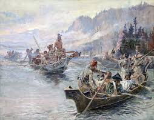

The Origins – 1840s
Although rafts had previously been around for centuries and used by indigenous
peoples, constructed
using natural materials like logs and reeds, contemporary inflatable rafts as we
know them today
first appeared in the 1840s. This first version was constructed by Lieutenant
John Fremont and
Horace H. Day, who built the raft with the intention of surveying the Rocky
Mountains and Great
Plains via the Snake River in the Pacific Northwest. However, their attempt
ultimately failed as the
rough waters proved to be too aggressive for this early constructed raft and
ultimately destroyed
it. But this first contemporary voyage would prompt further scientific
expeditions.

SOngoing Attempts – 1940s
It was not until a hundred years later when a significant development took place
with the
reintroduction of the rubber raft following its popularization in a military
context as well as its
development for use as a lifeboat. With the availability of military surplus
rafts, it’s around this
time that recreational rafting starts to gain its initial footholds. Next, (as
there often is with
history) the claim to the first commercial whitewater rafting trip appears to be
disputed between
Clyde Smith’s June 1940 trip through Snake River Canyon, and a separate claim of
a trip which also
supposedly also took place in June 1940 on the Salmon River. Which,
additionally, is believed to be
the location of the first-ever rafting company.